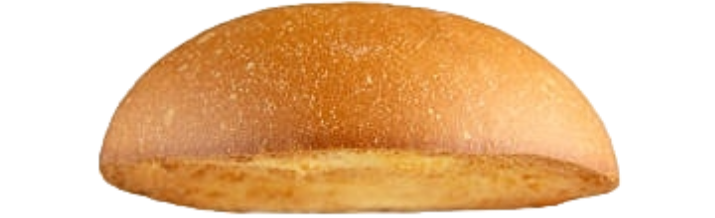
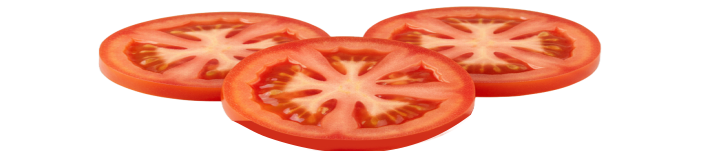
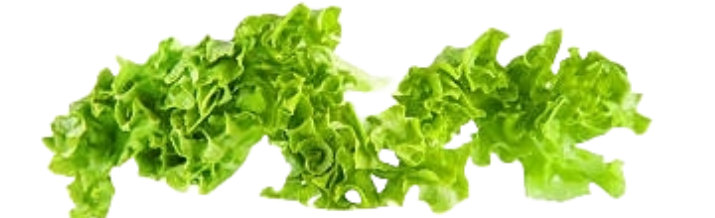
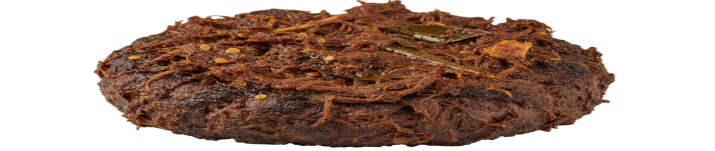
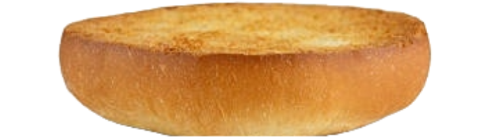

Hammers — Informasi gizi burger per lapisan
Halaman ini menampilkan susunan lapisan burger, rincian gizi per lapisan, perkiraan waktu olahraga yang dibutuhkan untuk membakar kalori, serta prosedur daur ulang dan penanganan sisa makanan. Klik lapisan burger untuk melihat gizi lapisan tersebut. Gunakan tombol "More details" untuk membuka tabel lengkap per-layer.





Gizi per lapisan dan total
Klik lapisan burger untuk menampilkan rincian gizi lapisan
tersebut. Tombol "More details" membuka tabel lengkap yang
menunjukkan nilai gizi semua lapisan sekaligus.
Total energi: --
| Nutrient | Jumlah |
|---|
Tabel utama menampilkan total. Untuk melihat per-layer, klik
lapisan burger di sebelah atau buka "More details".
Perkiraan olahraga untuk membakar kalori
Perkiraan dihitung berdasarkan berat rata-rata 70 kilogram. Ini
hanya panduan.
Daur ulang, penyimpanan, dan pembuangan sisa makanan
Panduan singkat langkah per langkah. Ganti kotak ikon dengan SVG
milikmu jika diinginkan.

A. Daur ulang kemasan
B. Cara menyimpan sisa makanan
C. Jika makanan tidak habis dan tidak bisa disimpan